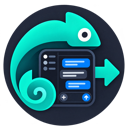

These preferences apply to every export.
System follows your browser/operating system theme.
Choose whether ChatScribe opens in a toolbar popup or a persistent sidebar.
Choose the language for ChatScribe's interface.
When enabled, image exports include an images folder. Otherwise, exports keep ChatGPT-hosted image links.
Applies when image bundling is enabled. Turn off to omit images generated in ChatGPT answers.
Keep the latest-answer and message-selection options visible whenever ChatScribe opens.
## User
**User:**
Each exchange starts with a User heading. User and Assistant messages stay together in that exchange, and headings inside message content are nested below it in the document outline.
---
Save exports straight to a GitHub repo.
Connect GitHub
····-····
A GitHub tab just opened. Enter this code there, then approve access for ChatScribe.